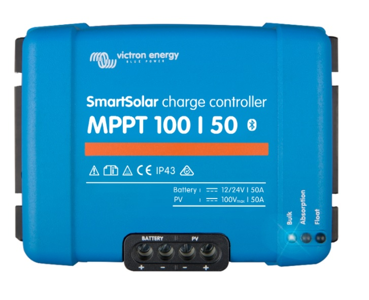
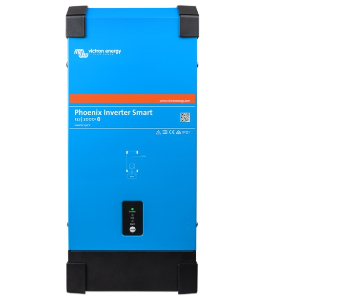
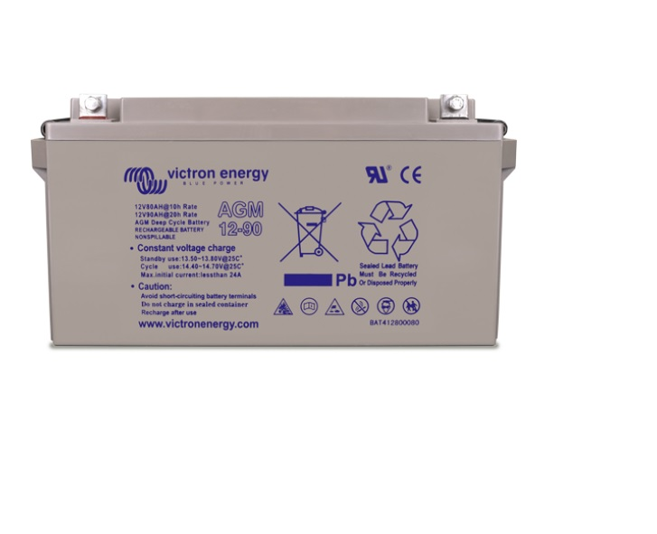

Solar Charge Controller

A solar charge controller manages the power going into the battery bank from the solar array.
It ensures that the deep cycle batteries are not overcharged during the day, and that the power doesn’t run
backwards to the solar panels overnight and drain the batteries.
Using the latest, fastest technology, SmartSolar maximises this energy-harvest, driving it intelligently
to achieve full charge in the shortest possible time. SmartSolar maintains battery health, extending its life.
ORDER PRODUCT
Phoenix Inverter Smart

Inverters play a crucial role in any solar energy system and are often considered to be the brains of a project,
whether it’s a 2-kW residential system or a 5-MW utility power plant. An inverter’s basic function is to “invert”
the direct current (DC) output into alternating current (AC). AC is the standard used by all commercial appliances,
which is why many view inverters as the “gateway” between the photovoltaic (PV) system and the energy off-taker.
ORDER PRODUCT
Gel and AGM Batteries

The AGM range has very low internal resistance making them particularly suitable for high current discharge
applications such as for inverters, thrusters and winches. The GEL model range offers best deep cycle durability
and overall longer life. The use of high purity materials and lead calcium grids ensure that for both AGM and GEL
products have particularly low self-discharge so that they will not go flat during long periods without charge.
Both ranges are supplied with M8 drilled, flat copper terminals ensuring best possible connection contact and
eliminating the need for battery terminals.
ORDER PRODUCT